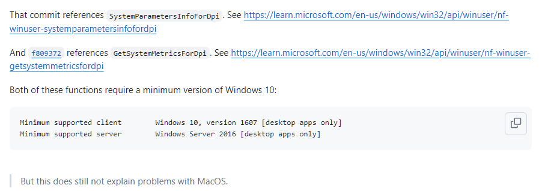
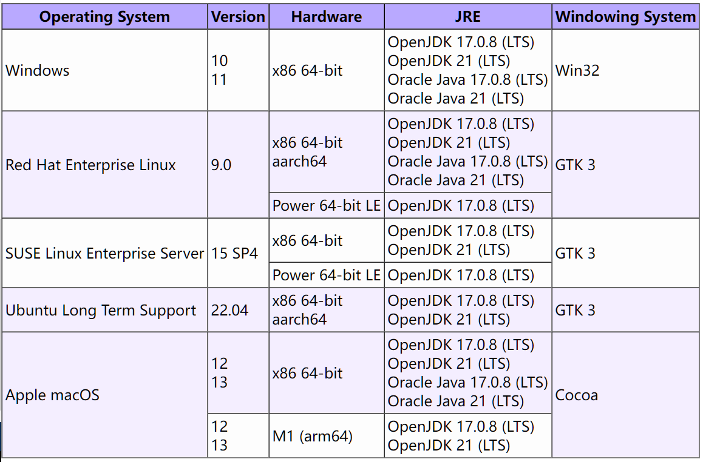

UnsatisfiedLinkError of swt-win32-4965r8.dll on Windows 7¶
问题说明¶
用户在Windows 7、Windows 8下使用NucleiStudio 2024.06时，发现启动不了，在NucleiStudio\configuration目录的日志中可以看到以下报错内容：
!ENTRY org.eclipse.osgi 4 0 2024-07-16 10:41:57.010
!MESSAGE Application error
!STACK 1
java.lang.UnsatisfiedLinkError: Could not load SWT library. Reasons:
C:\NucleiStudio\configuration\org.eclipse.osgi\492\0\.cp\swt-win32-4965r11.dll: 找不到指定的程序。
no swt-win32 in java.library.path: C:\NucleiStudio;C:\Windows\Sun\Java\bin;C:\Windows\system32;C:\Windows;C:/NucleiStudio//plugins/org.eclipse.justj.openjdk.hotspot.jre.full.win32.x86_64_21.0.3.v20240426-1530/jre/bin/server;C:/NucleiStudio//plugins/org.eclipse.justj.openjdk.hotspot.jre.full.win32.x86_64_21.0.3.v20240426-1530/jre/bin;C:\Java\JCDK3.0.4_ClassicEdition\bin;C:\Java\jdk1.6.0_26\bin;C:\Java\jdk1.6.0_26\lib;C:\Windows\system32;C:\Windows;C:\Windows\System32\Wbem;C:\Windows\System32\WindowsPowerShell\v1.0\;C:\Program Files\TortoiseSVN\bin;C:\Program Files (x86)\Microsoft SQL Server\90\Tools\binn\;D:\Python25;C:\NucleiStudio;;.
no swt in java.library.path: C:\NucleiStudio;C:\Windows\Sun\Java\bin;C:\Windows\system32;C:\Windows;C:/NucleiStudio//plugins/org.eclipse.justj.openjdk.hotspot.jre.full.win32.x86_64_21.0.3.v20240426-1530/jre/bin/server;C:/NucleiStudio//plugins/org.eclipse.justj.openjdk.hotspot.jre.full.win32.x86_64_21.0.3.v20240426-1530/jre/bin;C:\Java\JCDK3.0.4_ClassicEdition\bin;C:\Java\jdk1.6.0_26\bin;C:\Java\jdk1.6.0_26\lib;C:\Windows\system32;C:\Windows;C:\Windows\System32\Wbem;C:\Windows\System32\WindowsPowerShell\v1.0\;C:\Program Files\TortoiseSVN\bin;C:\Program Files (x86)\Microsoft SQL Server\90\Tools\binn\;D:\Python25;C:\NucleiStudio;;.
C:\Users\username\.swt\lib\win32\x86_64\swt-win32-4965r11.dll: 找不到指定的程序。
Can't load library: C:\Users\username\.swt\lib\win32\x86_64\swt-win32.dll
Can't load library: C:\Users\username\.swt\lib\win32\x86_64\swt.dll
C:\Users\username\.swt\lib\win32\x86_64\swt-win32-4965r11.dll: 找不到指定的程序。
at org.eclipse.swt.internal.Library.loadLibrary(Library.java:345)
at org.eclipse.swt.internal.Library.loadLibrary(Library.java:254)
at org.eclipse.swt.internal.C.<clinit>(C.java:19)
at org.eclipse.swt.internal.win32.STARTUPINFO.<clinit>(STARTUPINFO.java:42)
at org.eclipse.swt.widgets.Display.<clinit>(Display.java:149)
at org.eclipse.ui.internal.Workbench.createDisplay(Workbench.java:721)
at org.eclipse.ui.PlatformUI.createDisplay(PlatformUI.java:185)
at org.eclipse.ui.internal.ide.application.IDEApplication.createDisplay(IDEApplication.java:182)
at org.eclipse.ui.internal.ide.application.IDEApplication.start(IDEApplication.java:125)
at org.eclipse.equinox.internal.app.EclipseAppHandle.run(EclipseAppHandle.java:208)
at org.eclipse.core.runtime.internal.adaptor.EclipseAppLauncher.runApplication(EclipseAppLauncher.java:143)
at org.eclipse.core.runtime.internal.adaptor.EclipseAppLauncher.start(EclipseAppLauncher.java:109)
at org.eclipse.core.runtime.adaptor.EclipseStarter.run(EclipseStarter.java:439)
at org.eclipse.core.runtime.adaptor.EclipseStarter.run(EclipseStarter.java:271)
at java.base/jdk.internal.reflect.DirectMethodHandleAccessor.invoke(DirectMethodHandleAccessor.java:103)
at java.base/java.lang.reflect.Method.invoke(Method.java:580)
at org.eclipse.equinox.launcher.Main.invokeFramework(Main.java:668)
at org.eclipse.equinox.launcher.Main.basicRun(Main.java:605)
at org.eclipse.equinox.launcher.Main.run(Main.java:1481)
是因为在eclipse 2024.06版本中，有使用到一些特性，而该特性对操作系统有要求，可以参考 https://github.com/eclipse-platform/eclipse.platform.swt/issues/1252

并且在eclipse的官方文档中，针对eclipse测试的操作系统中也做了说明，对某些版本的操作系统不再做兼容。可以参考 https://eclipse.dev/eclipse/development/plans/eclipse_project_plan_4_32.xml#target_environments

而NucleiStudio 2024.06是基于eclipse 2024.06，所以也会有同类型的问题。
解决方案¶
请在windows 10或以上的版本操作系统上使用 NucleiStudio 2024.06。
如果想在Windows 7、Windows 8等低版本的操作系统上使用NucleiStudio，可以考虑使用NucleiStudio 2024.02及以下版本。